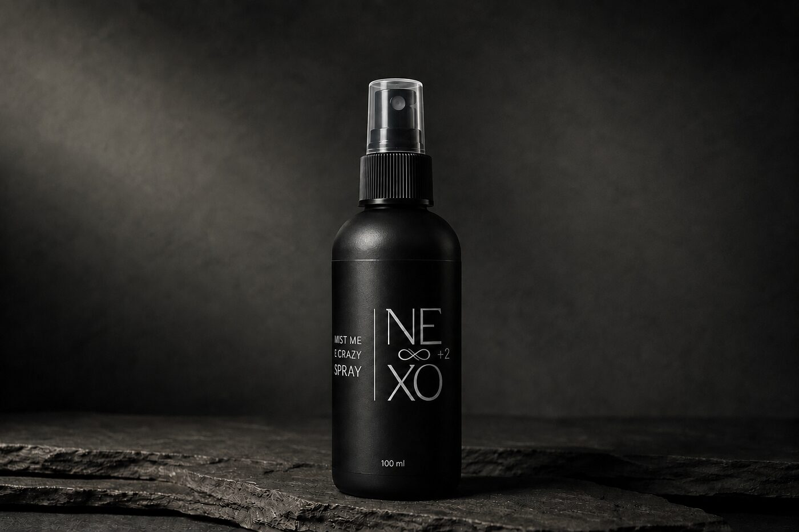
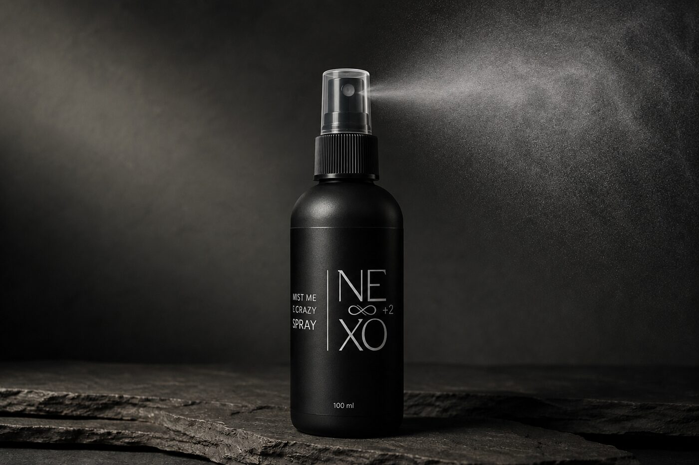

02 / Vårdar · Spray
Mist Me Crazy
Mjukhet och glans, utan tyngd.
100 ml
Pris TBD
16 ingredienser ·
Varje en förklarad →
Vad det är
En lätt och fräsch leave-in-spray som ger mjukhet, glans och en uppfriskande känsla. Perfekt att använda i både fuktigt och torrt hår för att minska friss och göra håret enklare att hantera utan att tynga ner.
Nyckelingredienser
- Panthenol (Provitamin B5) hjälper håret att kännas mjukt och välvårdat
- Aloe Vera återfuktar och ger en lugnande känsla för hår och hårbotten
- Rosmarinolja bidrar med en frisk och ren doft
- Lätta mjukgörande oljor ger naturlig glans utan att bli tungt
Så använder du det
Spraya jämnt från cirka 10–15 cm avstånd. Låt torka eller massera försiktigt in. Använd i fuktigt eller torrt hår, när som helst på dagen.
Följ upp med +3 Whip Me Good

Innehåll
Fullständig INCI, varje ingrediens förklarad (16)
- Aqua (Vatten) Bas som bär de aktiva ingredienserna.
- Panthenol (Provitamin B5) Ger mjukhet, glans och en vårdad känsla i håret.
- C15-19 Alkane Lätt mjukgörande olja som inte tynger ner håret.
- C14-22 Alcohols Stabiliserar formulan och ger mjuk känsla.
- Aloe Barbadensis (Aloe Vera) Leaf Juice Återfuktar och ger en behaglig känsla för hårbotten.
- Rosmarinus Officinalis (Rosmarin) Leaf Oil Ger en fräsch och örtig doft.
- Phenoxyethanol Konserveringsmedel som skyddar mot bakterier.
- C12-20 Alkyl Glucoside Mild tensid som stabiliserar blandningen.
- Polyacrylate Crosspolymer-6 Ger mjuk fördelning av sprayen på håret.
- Caprylyl Glycol Återfuktande och formelstabiliserande.
- Biosaccharide Gum-1 Binder fukt och ger en mjuk, slät känsla.
- T-Butyl Alcohol Stabiliserar formulan.
- Lactic Acid Justerar pH för att matcha hår och hud.
- Parfum (Doft) Ger en behaglig arom.
- Camphor Ger en lätt svalkande känsla.
- Beta-Pinenes & Limonene Naturliga växtbaserade doftkomponenter.
I ritualen
- +1 Rengör
- +2 Vårdar
- +3 Skyddar